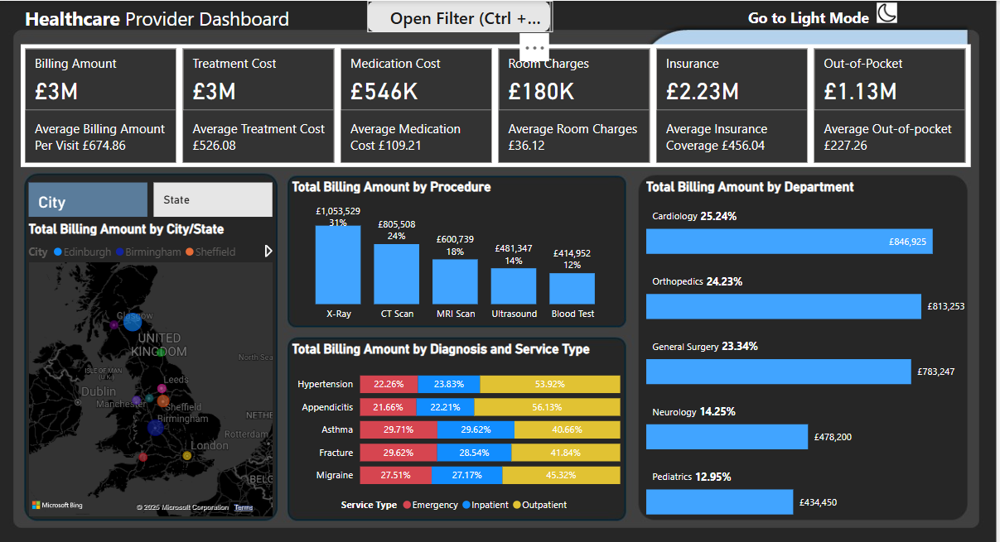
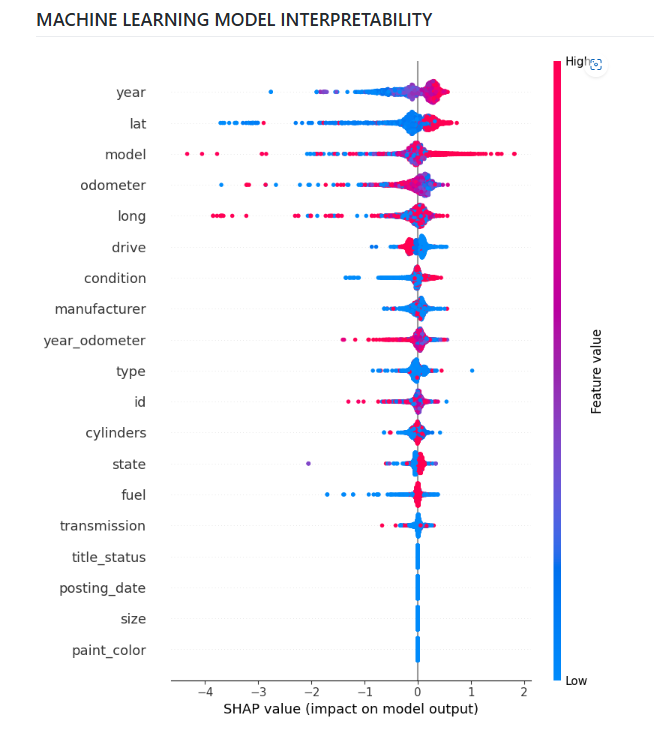
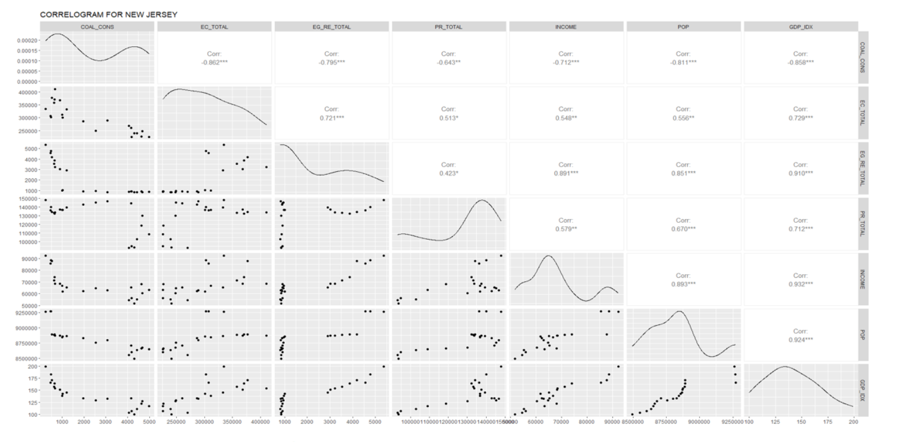
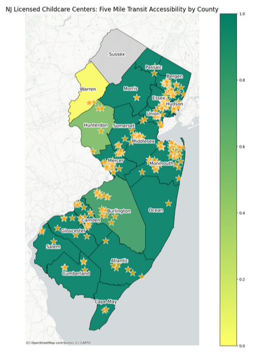
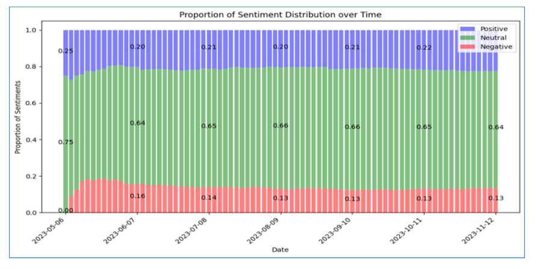
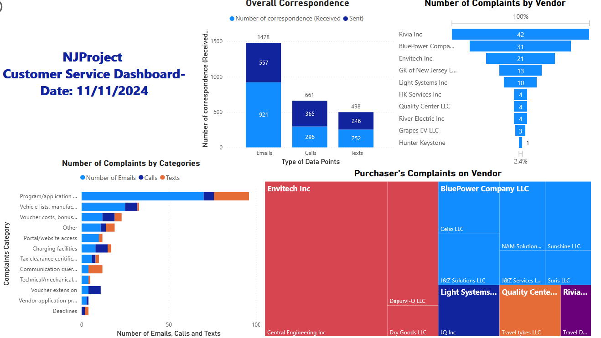

Hello!
I'm Md Nurul Hoque
I am a Business Intelligence enthusiast and data storyteller with expertise in Python, SQL, Tableau, and Power BI, specializing in Artificial Intelligence (AI), Natural Language Processing (NLP), and Machine Learning. I have proven experience in applying statistical analysis, predictive modeling, and AI-driven analytics to solve real-world problems and support data-informed decision-making. I am skilled at transforming complex datasets into actionable insights through data visualization and business intelligence solutions.
This portfolio highlights my journey and showcases a range of projects that demonstrate how I bridge business and technology to drive meaningful impact. I’d love to connect, collaborate, and grow together. I always welcome your feedback and suggestions!
Check out my lastest project below
This project created an interactive Power BI dashboard to analyze healthcare billing data across major UK cities. It provided detailed insights into billing metrics, highlighting areas such as departmental performance, procedure types, and geographic billing patterns. Key insights included identifying X-Ray procedures as the highest billing volume, cardiology as the leading department, and outpatient services dominating chronic condition management. Recommendations focused on optimizing departmental resource allocation, reassessing costs for high-billing procedures, enhancing outpatient services investment, reviewing insurance coverage gaps, and leveraging geospatial insights for regional policy decisions.

This project developed a machine learning model using XGBoost to predict resale prices of used cars listed on platforms like Craigslist. Leveraging historical data, the model achieved high accuracy, with an RMSE of 0.4249 and an R² score of 0.7954. SHAP analysis revealed that the most influential features for price prediction were vehicle model, year, and odometer readings. This data-driven approach enhances transparency, fairness, and consistency in car valuations, providing reliable pricing insights for stakeholders.

This project builds a cloud-native ETL pipeline to analyze trending YouTube video data using AWS. Structured (CSV) and semi-structured (JSON) datasets from Kaggle are ingested to Amazon S3 via AWS CLI. AWS Glue Crawlers catalog the data, Lambda transforms JSON to Parquet, and Glue Jobs clean and partition CSVs. Glue Studio joins both datasets to create an enriched analytics layer.
The final data is queried using Amazon Athena and visualized in QuickSight dashboards, showing insights like top video categories, likes-to-views ratios, and regional trends. The serverless architecture ensures scalability, automation, and real-time analysis using AWS-native tools.

This project created an interactive Power BI dashboard to analyze healthcare billing data across major UK cities. It provided detailed insights into billing metrics, highlighting areas such as departmental performance, procedure types, and geographic billing patterns. Key insights included identifying X-Ray procedures as the highest billing volume, cardiology as the leading department, and outpatient services dominating chronic condition management. Recommendations focused on optimizing departmental resource allocation, reassessing costs for high-billing procedures, enhancing outpatient services investment, reviewing insurance coverage gaps, and leveraging geospatial insights for regional policy decisions.
This project investigated the impact of renewable energy integration on energy consumption trends across the Middle Atlantic region of the United States, specifically focusing on New Jersey, New York, and Pennsylvania, from 2001 to 2022. The analysis utilized R programming and employed advanced graphical visualization techniques, including box plots, violin plots, parallel coordinates plots, radar charts, and animated line graphs, to capture and communicate complex relationships within the dataset. The analysis demonstrated a noticeable positive correlation between the growth of renewable energy adoption and overall energy consumption within these states. The insights gained from this project provide policymakers with robust, data-driven recommendations for promoting renewable energy through targeted incentives, subsidies, and strategic policies aimed at reducing reliance on fossil fuels and enhancing sustainable energy practices in the region.

This project presents a spatial analysis of licensed childcare centers in New Jersey. Utilizing datasets from the New Jersey Office of Information Technology Open Data Center, the study involved geocoding addresses to obtain geographic coordinates and employed spatial analysis techniques such as buffering and overlay operations. The analysis produced both static and interactive maps, offering insights into the distribution of childcare centers across counties, accessibility relative to population, and proximity to transit facilities, thereby informing policy and planning decisions regarding childcare services in New Jersey.

This project explores how news media influences public perceptions of artificial intelligence (AI) by analyzing whether media coverage tends to spread fear-driven narratives. Using text analytics and natural language processing (NLP), the study evaluates themes and sentiments present in a set of AI-related news articles. The methodology involved collecting and preprocessing a dataset of news articles in CSV format. Analysis was conducted using Python within the Google Colab environment, employing straightforward NLP and data analysis tools, including pandas, nltk, textblob, sklearn, matplotlib, seaborn, and wordcloud. The results indicated that fear-based narratives were not predominant within the examined dataset. Overall, this project provides clear, data-supported insights into media narratives around AI, helping inform public discussion and future research on media's role in shaping perceptions of artificial intelligence.

This project developed an interactive Power BI dashboard to analyze and visualize daily customer service interactions and complaint patterns for NJProject. The dashboard centralizes communication metrics across emails, calls, and texts, highlighting vendor performance and complaint trends. Key insights revealed emails as the dominant communication channel, with the vendors generating the most complaints, primarily related to program access and vehicle lists. Recommendations include prioritizing top complaint categories, streamlining communication workflows, engaging key vendors for performance improvement, and ongoing trend monitoring to enhance service responsiveness and customer satisfaction.
